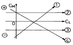
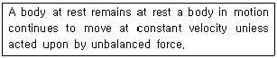
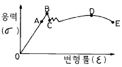

항공기체정비기능사 (2003-10-05 기출문제)
1과목: 비행원리
1. 비체적에 대한 설명 내용으로 가장 올바른 것은?
- 단위체적당 중량
- 단위질량당 체적
- 단위길이당 중량
- 단위면적당 작용하는 체적
(정답률: 51%)

2. 고도 1000m 에서 공기의 밀도가 0.1kgf.sec2/m4이고 비행기의 속도가 720km/h일 때, 이 비행기 피토관 입구에 작용하는 동압은 몇 kgf/m2인가?
- 7200
- 4000
- 2000
- 360
(정답률: 46%)
3. 활공기가 고도 1000m 상공에서 양향비 20인 상태로 활공한다면 도달할 수 있는 수평활공 거리는 몇 m 인가?
- 50
- 1000
- 10000
- 20000
(정답률: 77%)
4. 비행기의 날개골에서 공기의 흐름속도와 유도속도가 같으면 유도각은 얼마인가?
- 0°
- 30°
- 45°
- 90°
(정답률: 39%)
5. 전진 비행시에는 고정날개 항공기로써 비행하고 이륙 및 착륙할 때는 회전날개 항공기와 같은 비행원리로 비행이 가능한 항공기는?
- 자이로플레인 항공기
- 전환식 항공기
- 2축식 항공기
- 연식항공기
(정답률: 49%)
6. 정지된 유체속에 잠겨있는 어느 한점에 작용하는 압력에 대한 설명으로 옳은 것은?
- 윗쪽에서 작용하는 압력이 가장 크다.
- 아랫쪽에서 작용하는 압력이 가장 크다.
- 좌,우에서 작용하는 압력이 가장 크다.
- 압력은 작용방향에 관계없이 일정하다.
(정답률: 65%)
7. 타원 날개의 스팬효율 계수는?
- 0
- 1
- 10
- 100
(정답률: 54%)
8. 그림은 양력계수(CL)에 대한 키놀이 모멘트계수(CM)의 관계를 나타낸 것이다. 정적 세로 안정을 나타내는 직선은?

- ①
- ②
- ③
- ④
(정답률: 41%)
9. 실속 발생시 일어나는 현상으로 가장 올바른 것은?
- 버핏 현상
- 승강키효율 증가
- 기수올림 현상
- 속도 증가
(정답률: 81%)
10. 비행기의 평형을 이루게 하는 장치가 아닌 것은?
- 트림 탭
- 플랩
- 방향키
- 도움날개
(정답률: 45%)
11. 아음속 흐름에서 발생될 수 잇는 항력은 무엇인가?
- 유도항력, 조파항력
- 형상항력, 조파항력
- 유도항력, 형상항력
- 유도항력, 형상항력, 조파항력
(정답률: 64%)
12. 다음 중 가장 올바른 내용은?
- 비행기의 성능은 조종성에 의하여 좌우되기 때문에, 조종성은 클 수록 좋다.
- 비행기의 조종성이 크먼 안정성도 크다.
- 조종간을 당김으로써 받음각을 증가시는 경우, 불안정한 비행기는 받음각이 증가하는 방향으로 계속움직이려는 경항을 갖는다.
- 고속으로 비행하는 비행기는 조종성이 좋기 때문에 사실상 불안정한 상태로 되기는 어렵다.
(정답률: 66%)
13. 피치 업 현상이란?
- 비행기가 하강비행을 하는 동안 조종간을 당겨 기수를 올리려할 때, 조종성의 한계로 인하여 기수를 올리는 것이 불가능한 상태로 되는 것을 말한다.
- 비행기가 상승비행을 하는 동안 조종간을 당겨 기수를 올리려할 때, 조종성의 한계로 인하여 기수를 올리는 것이 불가능한 상태로 되는 것을 말한다.
- 비행기가 하상비행을 하는 동안 조종간을 당겨 기수를 올리려할 때, 받음각과 각속도가 특정값을 넘게되면 예상한 정도 이상으로 기수가 올라가고, 이를 회복할 수 없는 현상이 생기는 것을 말한다.
- 비행기가 상승비행을하는 동안 조종간을 밀어서 기수를 내리려할 때, 반대로 기수가 올라가려는 경향을 갖는 것을 말한다.
(정답률: 46%)
14. 단일 회전날개 헬리콥터의 꼬리 회전날개는?
- 헬리콥터의 가속 또는 감속을 위해 사용되는 장치이다.
- 주 회전날개에 발생되는 토크를 상쇄하고 방향 조종을 하기 위한 장치이다.
- 추력을 발생시키고, 헬리콥터의 기수를 내리거나 올리는 모멘트를 발생시키기 위한 장치이다.
- 추력을 발생시키는 것이 주 기능이며, 양력의 일부를 담당한다.
(정답률: 83%)
15. 회전익 항공기에서 수평 최도속도인 경우 이용마력과 필요마력과의 관계를 가장 올바르게 나타낸 것은?
- 이용마력 = 필요마력
- 이용마력 ＜ 필요마력
- 이용마력 ＞ 필요마력
- 1.5×이용마력 = 필요마력
(정답률: 60%)
16. 항공기의 정비교범을 가장 올바르게 설명한 것은?
- 항공기에 장착된 모든 계통과 구성품의 정비를 위한 완전한 지시사항으로서 운항 정비작업의 교범이다.
- 항공기로부터 장탈된 부품에 대하여 정상적으로 공장에서 수리작업을 하는 교범이다.
- 항공기 기체의 1차, 2차 구조물을 수리하는 교범이다.
- 부품의 도해를 나타내며, 부품번호를 명 하여 분해 및 조립을 하는 교범이다.
(정답률: 62%)
17. 토크렌치 암의 길이가 5in(12.7cm)인 토크렌치 0.5in(1.27cm)의 토크 어댑터를 연결하여 토크의 값이 25in-lbs 되게 볼트를 토크하였다. 볼트에 실제로 가해지는 토크의 값은 몇 in-lbs인가?
- 25.5
- 26.5
- 27.5
- 28.5
(정답률: 60%)
18. 안전결선 작업에 대한 내용으로 틀린 것은?
- 안전결선은 당기는 방행이 부품을 죄는 반대 방향이 되도록 한다.
- 안전결선은 한번 사용한 것은 다시 사용하지 않는다.
- 복선식 안전결선에서 부품의 구멍지름이 0.045in 이상 일때는 ø0.032in 이상의 안전결선을 사용한다.
- 복선식 안전결선에서 부품의 구멍지름이 0.045in 이하 일때는 ø0.020in인 안전결선을 사용한다.
(정답률: 57%)
19. 너트의 식별과 기호에서 AN 310 D-3R의 3은 무엇을 뜻하는가?
- AN 3 BOLT에 맞는 너트를 말하여 즉, 직경이 3/16인치 볼트에 맞는 너트이다.
- AN 3 BOLT에 맞는 너트를 말하며 즉, 직경이 3/8인치 볼트에 맞는 너트이다.
- 나사산이 3개 있다.
- 볼트의 길이에 맞게한 숫자이다.
(정답률: 64%)
20. 알루미늄 판에 구멍을 내는데 사용하는 드릴의 각도로 가장 적당한 것은?
- 59°
- 60°
- 90°
- 118°
(정답률: 72%)
2과목: 항공기정비
21. 부품의 손상형태에서 깊게 긁힌형태로, 표면이 예리한 물체와 닿았을 때 생긴것을 무엇이라 하는가?
- 균열
- 가우징
- 스코어
- 용착
(정답률: 52%)
22. 비파괴 검사 종류에 속하지 않는 것은?
- 침투탐상검사
- 현미경 검사
- 자분탐상검사
- 방사선투과검사
(정답률: 79%)
23. 육안검사에 대한 설명중 가장 관계가 먼 것은 ?
- 가장 오래된 비파괴 검사방법이다.
- 빠르고 경제적이다.
- 신뢰성은 검사자의 능력과 경험에 좌우된다.
- 다이첵크는 간접 육안검사의 일종이다.
(정답률: 74%)
24. 산소를 취급할 때 고압 산소통의 경우에는 표면에 어떤 색이 칠해져 있는가? (단, 항공용 산소통)
- 노란색
- 연한 녹색
- 빨간색
- 연한 청색
(정답률: 51%)
25. 항공기 타이어를 교환하거나 바퀴의 베어링에 그리스를 주입하기 위해 한쪽 바퀴만 들어올릴때 사용하는 잭은?
- 메인 잭
- 호이스트 잭
- 테일 잭
- 싱글 베이스 잭
(정답률: 67%)
26. 작동유가 항공기 타이어에 흘러있어서 이것을 제거하려한다. 어느것을 사용해서 세척하여야 하는가?
- 알콜
- 솔벤트
- 휘발유
- 비눗물과 더운물
(정답률: 67%)
27. 다음 문장 중에서 밑줄친 부분은 무슨 뜻인가?
- 키놀이
- 옆놀이
- 선회
- 빗놀이
(정답률: 76%)
28. 다음 문장에서 설명하고 있는 법칙은?

- 관성의 법칙
- 질량, 가속도의 법칙
- 작용, 반작용의 법칙
- 만유인력의 법칙
(정답률: 60%)
29. 이 게이지는 주로 치수의 기준으로 사용되며, 각종 게이지나 측정기구와 함께 사용되어 여러 가지 측정기구에 이용되는 기구는?
- 실린더 게이지
- 두께 게이지
- 블럭 게이지
- 마이크로메터
(정답률: 44%)
30. 박스렌치나 오픈엔드렌치 등의 공구 중 개구 부위나 박스 부위와 손잡이 사이가 각도가 주어져있는 공구는 어디에 사용하는가?
- 공구의 접근이 쉬운 부위
- 공구를 길게 연결하여 사용하고져 할 때
- 볼트나 너트를 좀더 세게 조이고져 하는 장소에
- 작업률이나 구조물에 공구가 닿아 접근이 어려울 경우에
(정답률: 63%)
31. CO2소화기는 어떤 화재시에 주로 사용되는가?
- A급, B급 화재
- B급, C급 화재
- C급, D급 화재
- D급, E급 화재
(정답률: 70%)
32. 활주로 횡단시 관제탑에서 사용하는 신호등에 의한 신호가 녹색등 일때 조치사항으로 가장 적합한 것은?
- 안전 - 빨리 횡단하기
- 안전 - 횡단 가능
- 사주를 경계한 후 횡단 가능
- 위험 - 빨리 횡단하기
(정답률: 89%)
33. 유자격 정비사의 확인을 받아야 하는 작업에 해당되는 것은?
- 항공기 지상취급
- 항공기 세척
- 항공기 각 부분의 조절 및 검사
- 항공기 연료 보급
(정답률: 70%)
34. 고장의 자료와 품질에 관한 자료를 감시,분석 하여 문제점을 발견하여, 이것에 대한 처리 대책을 강구하는 정비방식은 무엇인가?
- 공장 정비
- 정시 점검
- 신뢰성 정비
- 예방 정비
(정답률: 44%)
35. 볼트 중에서 스크류 드라이버를 작업 공구로 사용하도록 되어있는 볼트는 무엇인가?
- 표준 육각머리 볼트
- 정밀공차볼트
- 내부렌치볼트
- 클레비스볼트
(정답률: 60%)
36. 케이블식 조종계통 중에서 케이블의 장력을 조절해 주기위함 부품을 무엇이라 하는가?
- 풀리
- 턴 버클
- 케이블 가이드
- 터미널 연결부
(정답률: 67%)
37. 날개에 걸리는 대부분의 하중을 담당하며, 특히 굽힘하중을 담당하는 부재는 무엇인가?
- 날개보
- 보강재
- 세로대
- 응력외피
(정답률: 66%)
38. 알루미늄 합금 2024 - T4에서 끝의 T4는 무엇을 의미 하는가?
- 합금의 형태를 나타내는 것이다.
- 열처리 상태를 나타내는 것으로서 용액 열처리 후 자연시효를 한 재료이다.
- 합금의 종류를 나타낸 것이다.
- 순수 알루미늄을 나나태는 것이다.
(정답률: 68%)
39. 판금작업중 신장 및 수축 가공작업에 속하는 것은 어느 작업인가?
- 커얼링
- 터어닝
- 시이밍
- 펀칭
(정답률: 40%)
40. 항공기 무게중심을 나타내는 것은?
- C.G
- M.A.C
- C.P
- E.A.S
(정답률: 61%)
3과목: 항공기체
41. 헬리콥터의 주 회전날개의 평형작업에 대한 설명중 옳지 않은 것은?
- 진동은 회전날개와 기체구조에 커다란 영향을 끼치므로 회전날개는 평형을 맞추어야 한다.
- 주 회전날개의 진동은 시위방향과 길이방향의 평형이 맞지 않을 경우 나타난다.
- 떠어낸 상태에서 회전날개의 평형을 맞추는 것을 정적평형작업이라 한다.
- 동적평형작업이 끝난후에 정적평형작업을 실시한다.
(정답률: 47%)
42. 구조재료의 크리프 현상에 대해 가장 올바르게 설명한 것은?
- 일정한 응력을 받는 재료가 일정한 온도에서 시간이 경과함에 따라 하중이 일정 하더라도 변형률이 변하는 상태
- 일정한 응력을 받는 재료가 온도가 변화함에 따라 하중이 일정하더라도 변형률이 변화하는 현상
- 일정한 응력을 받는 재료가 일정한 온도에서 시간이 경과 함에 따라 하중이 변하더라도 변형률이 일정한 현상
- 일정한 응력을 받는 재료가 온도가 변화함에 따라 하중이 변화하더라도 변형률이 일정한 현상
(정답률: 40%)
43. 그림에서 후크의 법칙이 적용가능한 구간은?

- O-A
- B-C
- C-D
- D-E
(정답률: 56%)
44. 직경 5cm인 원형 단면봉에 1,000kgf의 인장하중이 작용할때 단면에서의응력은 몇 kgf/cm2 인가?
- 25.5
- 40.2
- 50.9
- 61.6
(정답률: 67%)
45. 헬리콥터의 주회전날개 헤드를 구성하고 있는 부품들은?
- 경사판, 주기피치조종로드
- 경사판, 허브
- 허브, 동시피치조종로드
- 주기피치조종로드, 동시피치조종로드
(정답률: 37%)
46. 현재 제조하는 항공기에서 양력발생 효과를 높이기 위해 날개끝에 장착한 것은?
- 윙팁
- 윙렛
- 윙팁익스텐션
- 서브윙
(정답률: 77%)
47. 항공기 동체구조에서 항공기 길이 방향으로 장착되는 구조 부재는?
- 프레임
- 정형재
- 스트링거
- 벌크헤드
(정답률: 62%)
48. 브레이크에서 블리이드 밸브의 주 역활은?
- 브레이크 유압계통에 섞여 있는 공기를 빼낼 때 사용된다.
- 브레이크 유압계통의 과도한 압력을 제거할 때 사용된다.
- 비상시 비상 브레이크 작동을 위해 사용된다.
- 파킹 브레이크로 가는 유로를 만들기 위해 사용된다.
(정답률: 62%)
49. 날개구조물 자체를 연료탱크로 하는 탱크내에 방지판을 두는 가장 큰 목적은?
- 연료가 팽창하는 것을 방지하기 위해서
- 연료가 출렁이는 것을 방지하기 위해서
- 내부구조의 보강을 위해서
- 연료보급시 연료가 넘치는 것을 방지하기 위해서
(정답률: 78%)
50. 앞바퀴형에 대한 설명으로 가장 관계가 먼 내용은?
- 이륙시 저항이 많으나 착륙성능이 좋다.
- 조종사의 시계가 넓다.
- 빠른속도에서 브레이크를 사용할 수 있다
- 제트기에 주로 사용된다.
(정답률: 35%)
51. 구조재료중 FRP의 설명으로 옳지 않은 것은?
- Fiber Reinforce Plastic(섬유강화 플라스틱)의 약어이다.
- 경도, 강성이 낮은것에 비해 강도비가 크다.
- 2차구조나 1차구조에 적층재나 샌드위치 구조재로서 사용된다.
- 진동에 대한 감쇠성이 적다.
(정답률: 46%)
52. 티타늄함금의 기계적 성질을 설명한 것 중 옳지 않은 것은?
- 고온에서 산소,질소,수소 등과의 친화력이 매우 크다.
- 열전도 계수가 작으므로 열의 분산이 나쁘고 가공할 경우 인화를 일으키기 쉽다.
- 티타늄 합금에도 열처리에 의해 강도를 올릴 수 있는 것과 없는 것이 있다.
- 티타늄 합금에는 알루미늄이 전혀 포함되어 있지않다.
(정답률: 46%)
53. 합금강의 분류에 있어서 1XXX는 무슨 강인가?
- 크롬강
- 몰리브덴강
- 탄소강
- 니켈-크롬강
(정답률: 51%)
54. 헬리콥터의 동체구조가 아닌 것은?
- 트러스형 구조
- 테일콘형 구조
- 세미모노코크 구조
- 모노코크형 구조
(정답률: 68%)
55. 페일세이프 구조에 대하여 가장 올바르게 설명한 것은?
- 좌굴파괴를 고려하여 만들어진 구조이다.
- 최대하중에서 파괴한도를 만들어진 구조이다.
- 제한하중에서 파괴되도록 만들어진 구조이다.
- 다경로 하중을 갖도록 만들어진 구조이다
(정답률: 64%)
56. 허니컴 구조의 가장 큰 장점은?
- 검사가 필요치 않다.
- 무겁고 아주 강하다.
- 비교적 방화성이 있다.
- 무게에 비해 강도가 크다.
(정답률: 83%)
57. 노타(NOTAR) 헬리콥터의 특징이 아닌 것은?
- 테일 붐 끝에 반동추진 장치가 있다.
- 무게를 감소시킬 수 있다.
- 고리 회전날개가 부딪칠 가능성이 더 크다.
- 정비나 유지가 쉽다.
(정답률: 51%)
58. 우수한 전기절연성, 내수성, 내약품성 및 자기소화성을 가지고 있으나, 유기용제에 녹기 쉽고 열에 약하며, 비교적 비중이 커서 전선의 피복제 또는 항공기의 객실 내장재로 사용되는 비금속 재료는?
- 폴리염화비닐
- 폴리메타크릴
- 에폭시 수지
- 폴리우레탄
(정답률: 44%)
59. 항공기의 중심위치를 계산할 때 쓰는 모멘트라는 것은 어느 것을 뜻하는가?
- 길이 * 무게
- 길이 + 무게
- 무게 - 길이
- (무게 × 길이) ÷ 2
(정답률: 60%)
60. 평형상태에 있는 강체이 대한 힘을 해석하기 위하여 물체의 외형선만 간력히 그린 그림에 다른 물체로부터 받는 모든 힘을 화살표로 나타낸 그림을 무엇이라고 하는가?
- 정적 평형도
- 자유 물체도
- 설계 물체도
- 응력 변형도
(정답률: 25%)